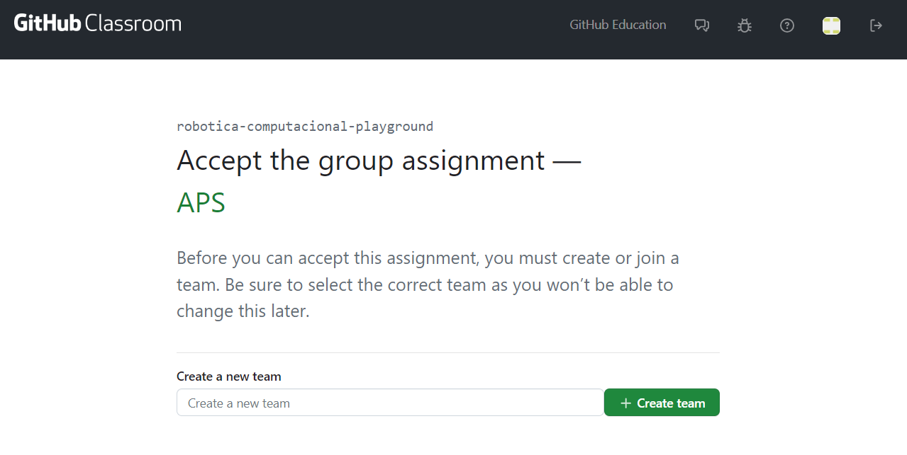

Configuração da APS
Todas as entregas da disciplina serão feita via Github Classroom.
Entregas via GitHub Classroom
- Criação e Participação em Equipes: Para cada APS, um link de convite do GitHub Classroom será disponibilizado.
- Uma pessoa da dupla deve criar a equipe no GitHub Classroom usando o link fornecido.
- A outra pessoa deve entrar na equipe já criada. É crucial não esquecer de entrar na equipe designada.
- Escolha do Nome da Equipe: Podem escolher qualquer nome, contanto que ambos os membros da dupla estejam na mesma equipe.
- Acesso ao Repositório: Após a criação da equipe, você será redirecionado para um repositório privado para a entrega da APS.
Ao clicar no link de convite você será direcionado para a página do Github Classroom, com as opções de criar uma equipe ou entrar em uma já existente, como na imagem abaixo.

Configuração do Repositório
- Clonagem do Repositório: Se já completou o tutorial de configuração do git e gerou sua chave SSH, clone o repositório optando por SSH. Caso contrário, siga o tutorial de configuração do Git.
- Atualização do
README.md: Adicione o nome dos dois membros da dupla no arquivoREADME.md, faça um commit e um push para o repositório. Após essas etapas, podem iniciar o trabalho na APS.
Atenção
Atualizações do Repositório: O professor pode solicitar atualizações do repositório com as últimas alterações. Para isso, siga o tutorial de pull template.
Configuração do Pacote (ROS 2)
- Preparação Inicial: Primeiro, aceite o convite do GitHub Classroom e clone o repositório dentro da pasta
colcon_ws/src/no seu SSD. - Criação do Pacote ROS 2: Dentro do diretório do seu repositório, crie um novo pacote nomeado
entregavel_#, substituindo#pelo número da APS correspondente. A criação de um pacote será ensinada no módulo 2.